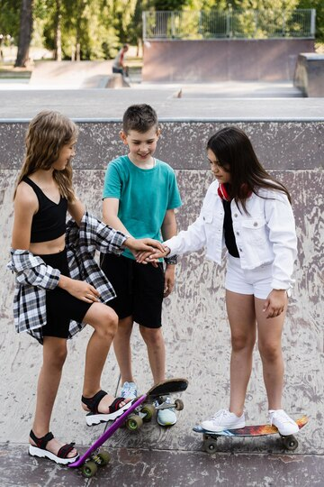

Don’t worry if you're just starting out, we’re here to help! Our experienced and well-trained coaches will guide you every step of the way, teaching you the fundamentals and helping you build confidence on your skateboard. Whether you’re starting from scratch or looking to improve your skills, we’ve got the perfect program to suit your needs. Let’s get rolling!
Auditory Cues: Blind skateboarders listen to the sounds of their environment, including the texture of the ground beneath their wheels. These auditory cues help them gauge speed, direction, and terrain.
Verbal Cues and Spotters: Blind skateboarders often have a coach or spotter who offers verbal guidance, such as instructions to "lean right" or "pop the board" at the right moment. This guidance is essential in helping them perform tricks and navigate skateparks.
Muscle Memory and Repetition: Like any athlete, blind skateboarders rely on muscle memory. Through consistent practice, they learn to "feel" their board and their body’s positioning to execute tricks successfully.
Adaptive Technology: Some blind skateboarders use wearable devices that offer haptic feedback or vibrations to alert them to obstacles or changes in terrain, helping them navigate skateparks more safely.
Derrick "DJ" Johnson: DJ Johnson is one of the most famous blind skateboarders, using sound and tactile feedback to navigate skateparks. Despite losing his sight, he has become an accomplished skateboarder and an advocate for adaptive sports.
Aaron "Wheelz" Fotheringham: While Aaron is not completely blind, he uses a wheelchair and has become a pioneer in extreme sports, including wheelchair skateboarding. His innovations in adaptive sports inspire athletes across various disabilities, including blind skateboarding.
Blind Skateboarding Events: Grassroots events and competitions are bringing the blind skateboarding community together. These events provide opportunities for mentorship and peer learning while raising awareness about adaptive sports.
Building Confidence: The challenges involved in learning to skate blind help build confidence that extends far beyond the skatepark.
Community and Inclusion: Adaptive skateboarding fosters a sense of belonging and community. Athletes come together to support one another, creating strong bonds and breaking down social barriers.
Breaking Stereotypes: Blind skateboarding challenges societal perceptions of what people with disabilities can do. These athletes are proving that disability is no barrier to achieving greatness in sports and life.